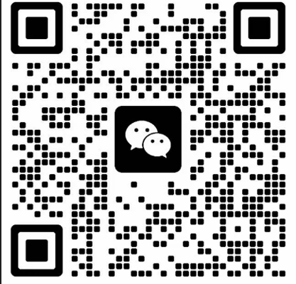

微信 · 加个好友
扫码加我微信，备注来意，通过会快一些。
我是 Lucas，90 后独立开发者。目前主要做文档方向、无人机轨迹规划、Web 开发，以及 AI Agent 应用与大模型的训练微调、部署。
喜欢关注很细微的东西，从中发现乐趣；也喜欢热闹、爱参加活动，因为总能学到很多。业余玩摄影，谈不上精通。对项目自我要求高，习惯反复打磨——是个坏习惯，但东西就是这么慢慢变好的。
把一件事做完，比铺一个大摊子重要。
有一个人每天打开你做的东西，就是它存在的意义。
改完一版还想再改——坏习惯，也是标准。

扫码加我微信，备注来意，通过会快一些。

如果哪个项目帮到了你，扫码赞赏，请我喝杯咖啡。